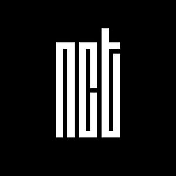

- HTML
- CSS
- JAVA SCRIPT
HTML

NCT(한국어: 엔시티)는 SM 엔터테인먼트 소속의 멤버 수 제한이 없는 보이 그룹으로, 현재 NCT로 소개된 멤버 수는 23명이다.
NCT라는 이름은 'Neo Culture Technology'(네오 컬쳐 테크놀로지: 새로운 문화 기술)'의 약자로, 그룹의 핵심 키워드를 '개방성'과 '확장성'으로 소개한 SM 엔터테인먼트 대표 프로듀서 이수만은 그룹이
전세계 주요 도시를 기반으로 한 여러 서브 유닛으로 나뉘며,새로운 멤버의 영입이 자유롭고 멤버 수에도 제한을 두지 않는다고 설명하였다. 즉, 로테이션 그룹이라고 할 수 있다는 것이다.